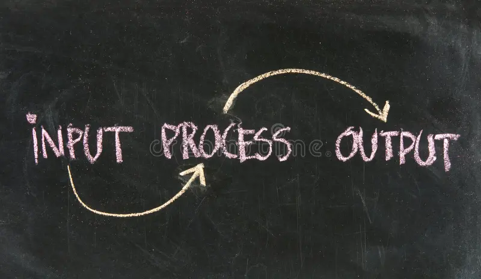

Het IVU-model beschrijft hoe een computer(systeem) in grote lijnen werkt, in drie stappen: invoer, verwerking en uitvoer. Dit model geldt niet alleen voor hele computers, maar ook voor losse programma's en zelfs voor apparaten als een wasmachine of een thermostaat.
Bij invoer komen gegevens de computer binnen, bijvoorbeeld via een toetsenbord, muis, microfoon of sensor. Bij verwerking voert de processor (CPU) berekeningen uit of volgt instructies op basis van die gegevens.
Bij uitvoer komt het resultaat weer naar buiten, bijvoorbeeld op een beeldscherm, via een printer of een luidspreker. Voorbeeld: "4 + 5" intikken is invoer, de optelling is verwerking, en het getal 9 op het scherm is uitvoer.

img/>